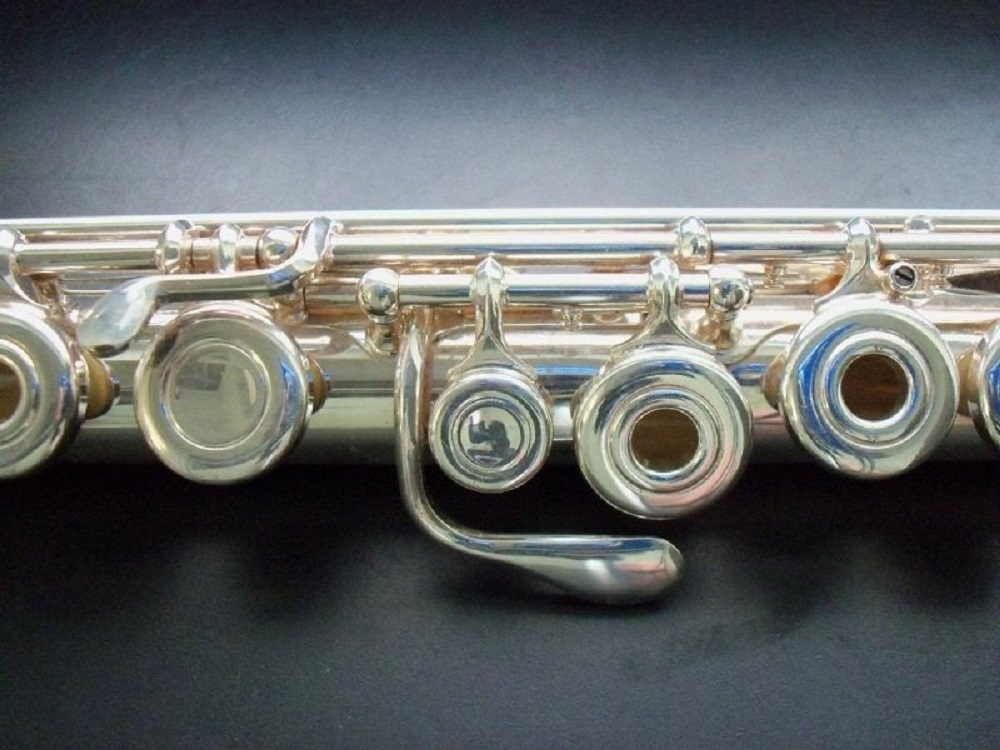

The Transverse Flute as Institutional Pedagogy
Note 033
Home > Blog A Musician's Log > Note 033
Eight flute teachers in Sutatenza
In 2001, Colombia's Ministry of Culture published the Guía de iniciación a la flauta traversa, a practical manual intended for beginning flautists and directors of wind bands. The publication belonged to the National Bands Programme, an initiative developed to strengthen musical education and instrumental performance throughout the country.
The guide had an unusual origin. Rather than commissioning a single musician to write a method, the Ministry brought together eight flute teachers for two workshops held in Sutatenza, Boyacá, in June 1999 and July 2000.
The participants represented different Colombian universities, conservatories, and performing ensembles. Their professional backgrounds included European conservatory training, particularly in France, as well as experience in Colombian musical institutions and bands.
The workshops were described as exercises in homologación: an attempt to establish common pedagogical principles by comparing existing approaches to instrumental teaching.
The resulting publication assembled their recommendations into a practical sequence of lessons and exercises. Its first edition appeared in 2001, followed by a second in 2003, under the Ministry's Plan Nacional de Música para la Convivencia.
What the guide actually taught
The manual concerns the modern Boehm-system transverse flute. Its contents begin with the instrument's construction, assembly, and maintenance before moving into the physical techniques of performance.
Posture receives considerable attention. The authors discuss the alignment of the head, neck, spine, arms, and hands, emphasizing the avoidance of unnecessary muscular tension. Embouchure is explained through the position of the lips, their relationship with the mouthpiece, and the direction of the air jet.
Breathing, articulation, tone production, dynamics, vibrato, and intonation receive their own treatment. The guide describes different tonguing movements through syllables such as te, ke, de, and du, and distinguishes articulations including legato, staccato, and portato.
These subjects were hardly new to flute pedagogy. What distinguished the Colombian publication was the process through which eight teachers selected, discussed, and organized them for a shared educational purpose.
The guide also acknowledges that instrumental technique cannot be reduced to fixed mechanical instructions. Intonation, for example, depends on the performer's embouchure, airflow, and auditory judgment. The authors recognize differences in facial anatomy and allow corresponding adjustments in the positioning of the instrument.
Playing together
An important portion of the guide addresses the problems of ensemble performance, reflecting its intended use within Colombian wind bands.
The authors discuss tuning, tonal balance, articulation, and rehearsal procedures. They recommend working systematically with scales, unisons, intervals, and chords, while developing the ability to listen and adjust to other players.
One particularly revealing recommendation concerns unison performance. When several instruments play the same note, the desired result is not merely a collection of correctly tuned sounds. The performers should seek a unified timbral impression, even as the combined intensity increases.
The manual also recommends sectional rehearsals, attention to principal melodic lines, and adjustments to dynamics and articulation according to the requirements of the music. More advanced students are encouraged to assist beginners.
The aim was therefore not limited to teaching an individual how to operate a flute. It included preparing that musician to participate in the coordinated sound of a wind band.
A national guide for regional bands
The guide's introduction acknowledges the importance of wind bands in Colombian popular culture. Its authors explicitly argue that technical improvement should not separate those ensembles from their regional musical traditions.
This qualification is significant. The Ministry was promoting shared technical instruction in a country whose bands participated in different musical environments, from local festivities and religious celebrations to civic events and formal concerts.
The publication did not propose replacing those traditions with a single national repertoire. Instead, it sought to provide teachers and students with a common technical foundation that could be applied within different musical settings.
From workshop to printed manual
The Guía de iniciación a la flauta traversa formed part of a larger publishing programme. According to CONPES document 3191, issued in 2002, the Ministry printed 1,000 copies of the first edition in 2001. Introductory guides for clarinet, saxophone, trumpet, and percussion were also published that year in comparable quantities.
These materials accompanied other efforts to develop municipal bands through instrumental provision, teacher training, and educational resources.
The flute guide thus emerged from a specific sequence of activities: two meetings of professional musicians in a town in Boyacá, the formulation of shared teaching recommendations, and the publication of those recommendations for use by band directors and students across Colombia.
Its history offers a particularly concrete example of how the experience of individual musicians was brought together and made available through a national educational programme.
Readings
- Colombia, Departamento Nacional de Planeación. 2002. Documento CONPES 3191: Fortalecimiento del Programa Nacional de Bandas de Vientos. Bogotá, July 25.
- Colombia, Ministerio de Cultura. 2003. Guía de iniciación a la flauta traversa. 2nd ed. Bogotá: Ministerio de Cultura, Dirección de Artes, Programa Nacional de Bandas.